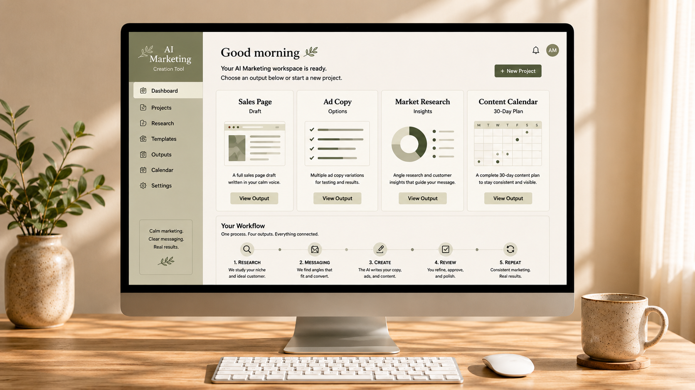
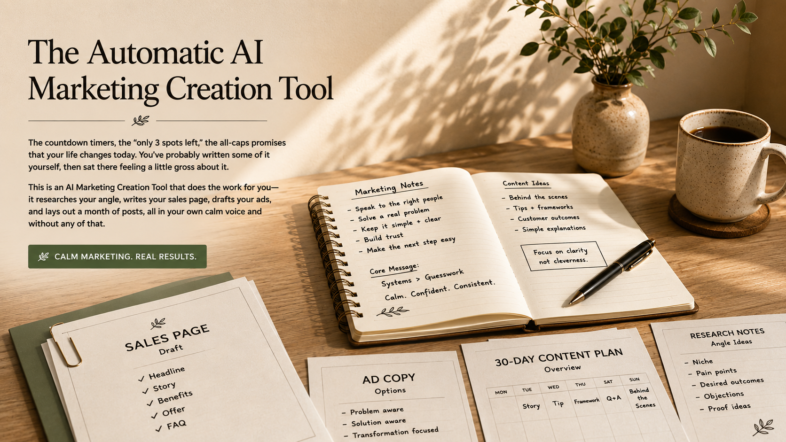
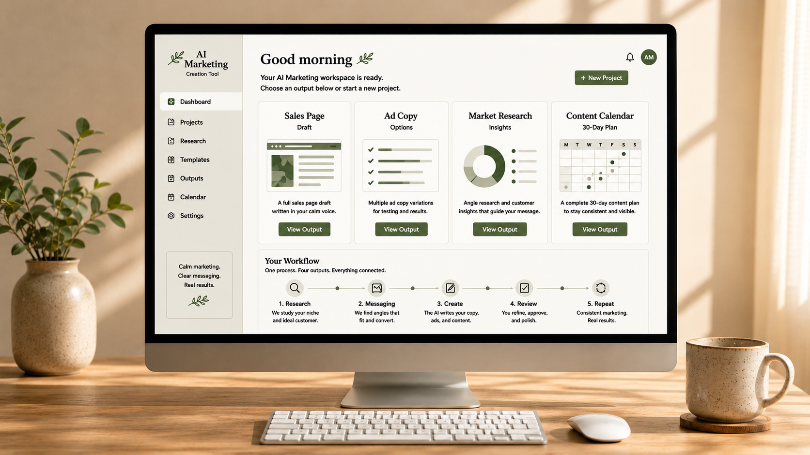
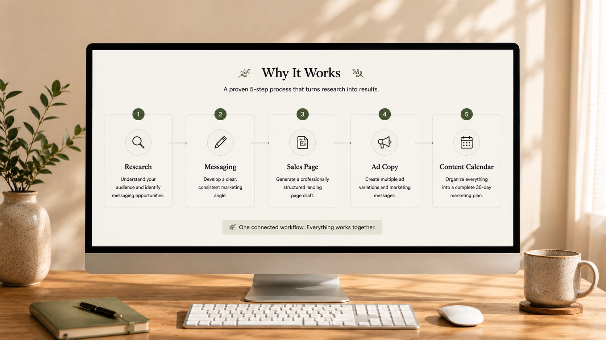
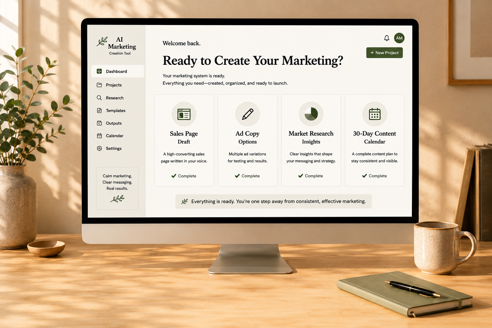

The Automatic AI Marketing Creation Tool
Marketing that sounds like you — your sales page, your ads, and a month of posts — written by a tool that runs on your own computer. Built for quiet, honest businesses.
$57, paid once. Yours to keep.

You know the kind of marketing that makes you wince. The countdown timers, the "only 3 spots left," the all-caps promises that your life changes today. You've probably written some of it yourself, then sat there feeling a little gross about it. This is an AI Marketing Creation Tool that does the work for you — it researches your angle, writes your sales page, drafts your ads, and lays out a month of posts, all in your own calm voice and without any of that.
The problem
Most marketing advice assumes you're comfortable being loud. It hands you funnels, fake scarcity, and copy engineered to pressure people, then tells you that's just how selling works. If you've ever published a sales page and thought, that doesn't sound like me, you already know the cost. The hype tools convert, sure, but they leave you running a version of your business you don't quite recognize. And the alternative usually feels like no marketing at all, which is its own kind of stuck. You want to grow without becoming someone you'd avoid at a party.
How this came about
This started with a simple frustration. The people building quiet, honest little businesses had no tools made for them. Every marketing product on the market was tuned for maximum pressure, because pressure is what gets measured. So the work became teaching an AI assistant to write the other way: plainly, warmly, like one real person leveling with another. It researches the angles that actually fit your niche, drafts a sales page in a calm editorial voice, writes ad copy that won't get your account flagged, and lays out a month of posts so you're not staring at a blank calendar. It runs on your own computer, because your business is your business. No cloud account holding it hostage, no monthly bill. It's the AI Marketing Creation Tool we wanted and couldn't find.

What you get
For $57, paid once, you download the full AI Marketing Creation Tool. It runs on your own machine and includes four things working together:
- Niche angle research — the positioning angles that actually fit your niche.
- A full sales page draft — written in the calm voice, ready for you to edit.
- Facebook-compliant ad copy and hooks — with a note on why each one stays within policy.
- A 30-day posting calendar — a month of posts mapped out, in your voice.
A plain-English setup guide comes with it, written for people who have never touched anything technical. You own the download. There's no subscription, no upsell ladder waiting on the other side, no account to manage. Pay once, keep it.

Here's what it actually wrote
Everything below came out of the tool on a real run — nothing was touched up for this page. (In fact, the page you're reading was drafted by it too.) This is the calm voice you'd be starting from.
The anti-hype alternative. Position the toolkit as the calm option in a market built on pressure. Most marketing tools sell speed and "high-converting" output; this one sells marketing you won't be embarrassed to put your name on.
Sellers feel gross running funnels and fake-scarcity copy that doesn't sound like them. They want to grow without feeling like a con artist, and they want copy that matches a quiet, trustworthy brand.
- Hook — You know the kind of marketing that makes you wince…
- Problem — Most marketing advice assumes you're comfortable being loud…
- Offer — For $57, paid once, you download the full AI Marketing Creation Tool…
- Close — If you've been looking for a way to market your work that doesn't make you cringe, this is it…
"Most marketing tools are tuned for maximum pressure. This one was taught to write the other way."
Compliant: describes the product, no income or outcome claim.
"What if your sales page actually sounded like you, instead of like every other AI page?"
Compliant: curiosity-based question about the product, no personal callout.
Honest answers
You might wonder whether the copy will sound like every other AI page. It's written to a specific calm voice, and you control all of it, so treat it as a confident draft you shape rather than a robot's verdict. You might worry about the technical side. The setup guide is written for total beginners and walks through running it on your own computer step by step, including what your machine needs. And the price. It's $57 once because it's a download you own, not a service we host. To be straight with you, that means it doesn't include hosting, a checkout system, or ongoing updates. It builds the marketing. The rest is yours to plug in wherever you already sell.
Why it works
This isn't magic, and it's better that you know how it works. The AI Marketing Creation Tool runs a structured process on your computer: it studies your niche, picks the angles that hold up, and writes everything to one consistent voice so your sales page, ads, and posts don't contradict each other. Because it's the same system producing all four pieces, the messaging stays coherent in a way that stitching together five separate tools never quite manages. The output is a strong first draft, not a locked final word. You edit every line. What you get is the structure and the starting point, which is the part that usually takes the longest.

If it's a fit
If you've been looking for a way to market your work that doesn't make you cringe, this is it. No pressure to decide tonight, no timer counting down. When you're ready, download it, run it, and see what it writes. If the voice fits yours, you'll know quickly. It's $57, it's yours to keep, and it's waiting whenever you are.
And if the voice doesn't fit yours, email me at BuiltBySystems@pm.me and I'll refund it. No forms, no back-and-forth.
